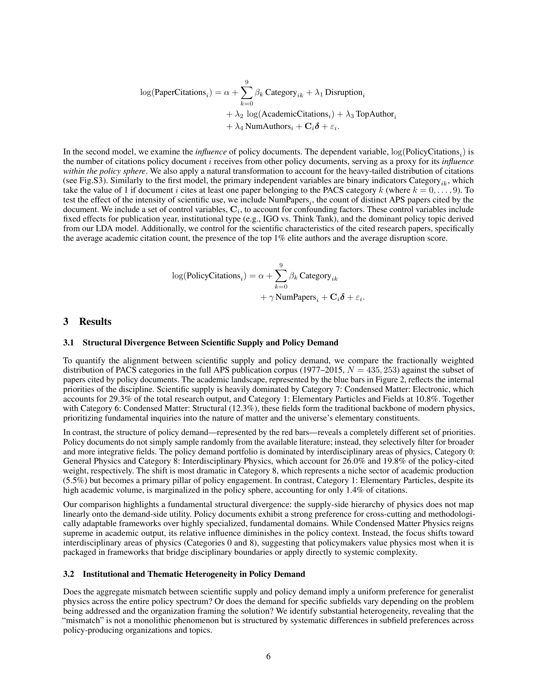
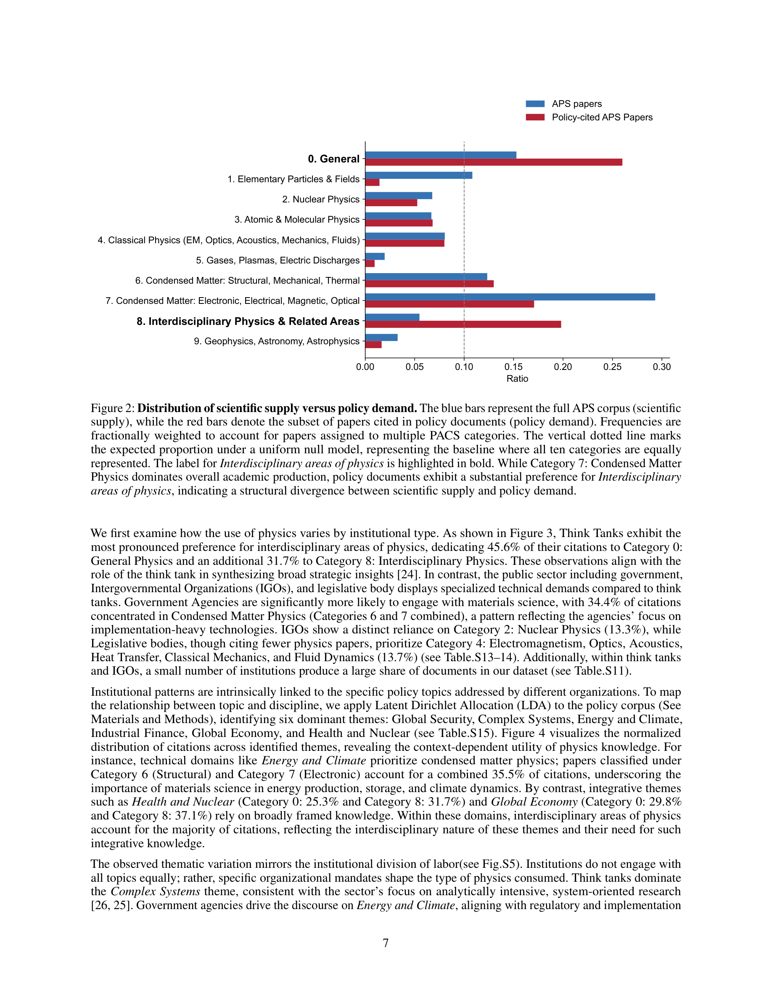
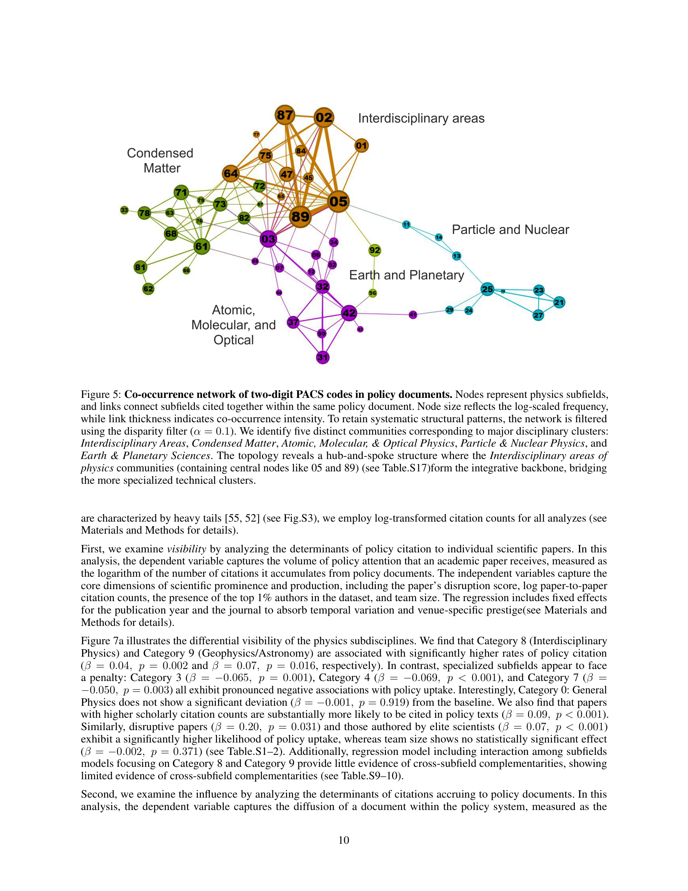

Figure 1
저자: Jeongmin Lee, Jisung Yoon | 날짜: 2026-02-11 | Journal: arXiv preprint | DOI: 10.48550/arXiv.2602.10427
Figure 1
물리학 지식이 정책 문서에 선택적으로 활용되는 메커니즘을 실증 분석한 결과, 정책 문서는 물리학의 연구 생산 구조를 그대로 반영하지 않고 학제간(interdisciplinary) 분야를 불균형적으로 선호한다. Category 8(Interdisciplinary Physics)은 학술 생산의 5.5%에 불과하지만 정책 인용의 19.8%를 차지한다. 그러나 정책 가시성(visibility)과 정책 영향력(influence)은 분리되며, 지구물리학(Category 9) 인용 시 정책 영향력이 약 24% 증가하는 반면, 학제간 물리학은 영향력에 유의한 효과가 없다.

Figure 2

Figure 3

Figure 4

Figure 5
총평: 과학 지식의 정책 활용에서 가시성과 영향력의 분리를 실증한 참신한 연구로, 학제간 물리학이 정책 진입의 gateway이지만 영향력의 driver는 아니라는 역설적 발견이 Science of Science와 science policy 분야에 중요한 시사점을 제공한다.